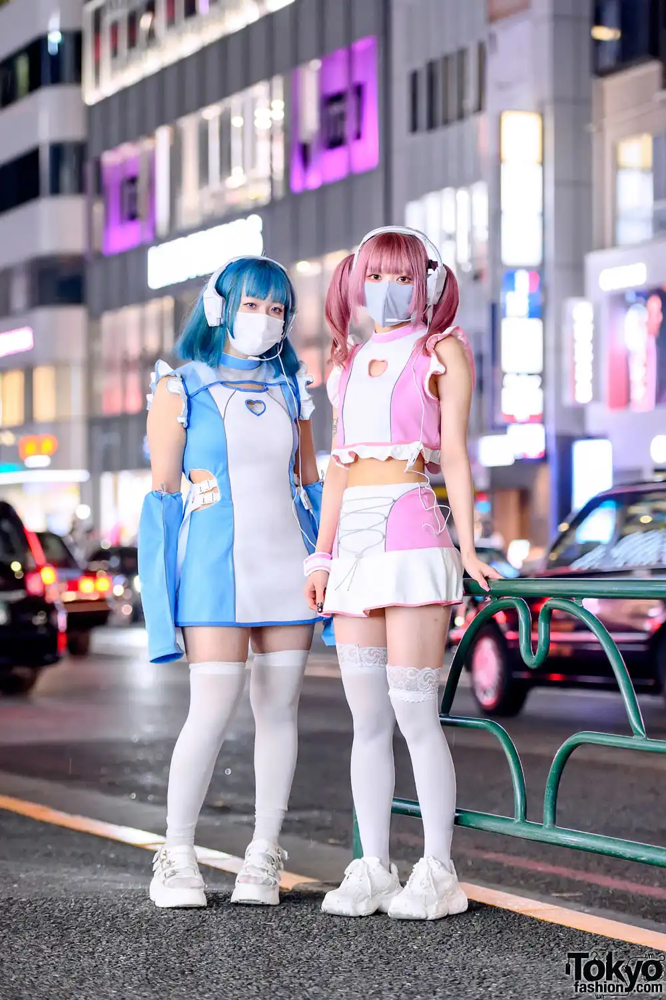
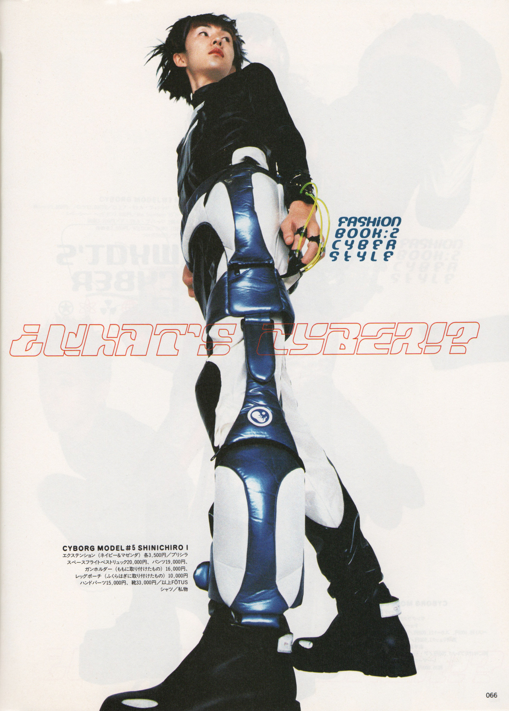
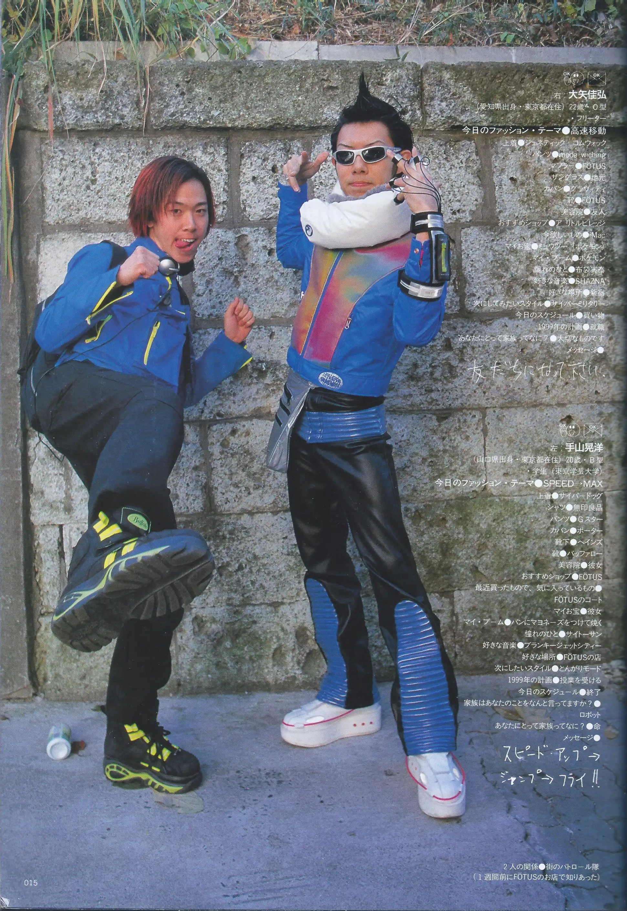
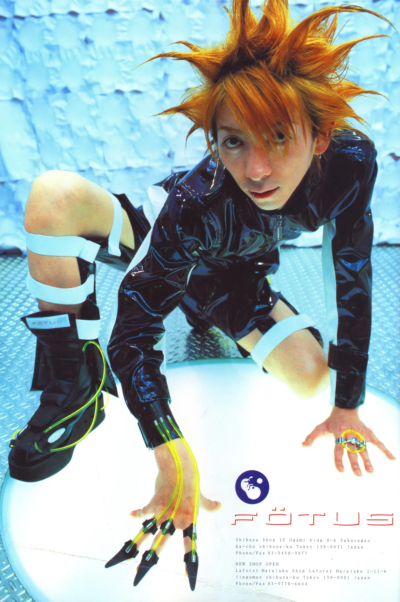
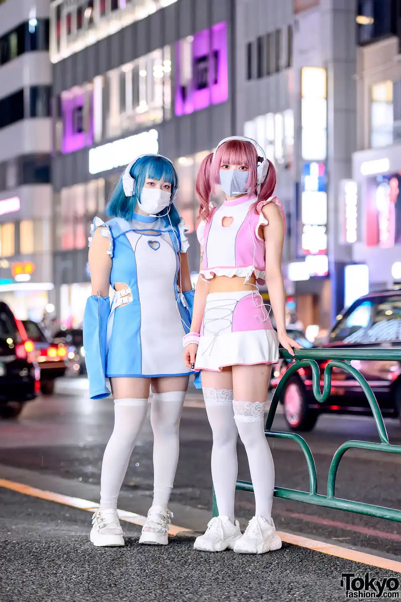
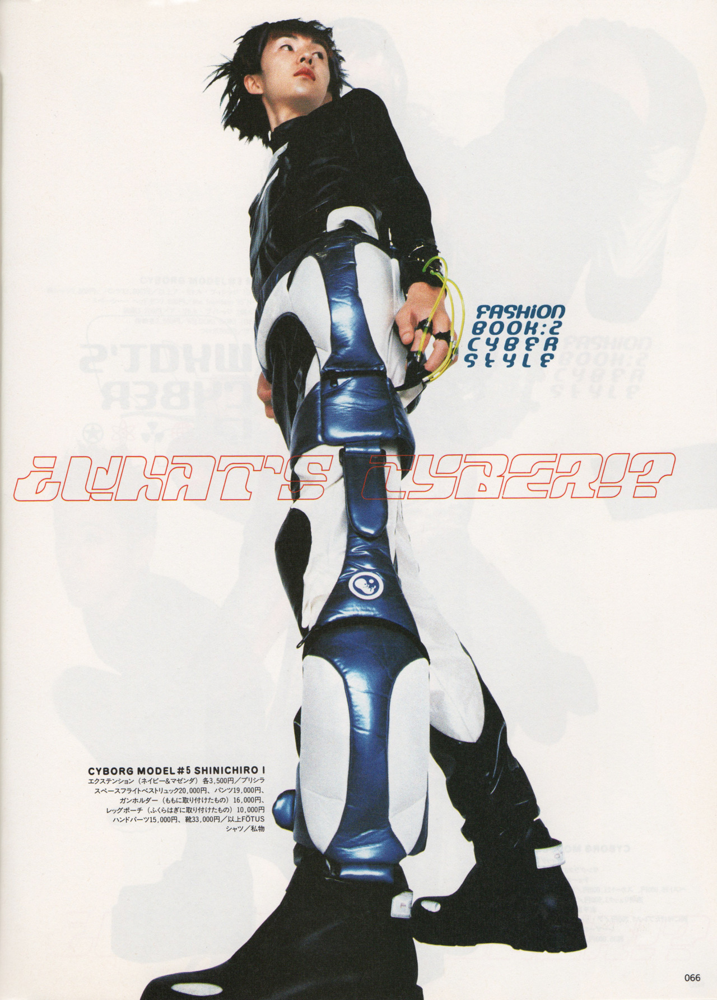
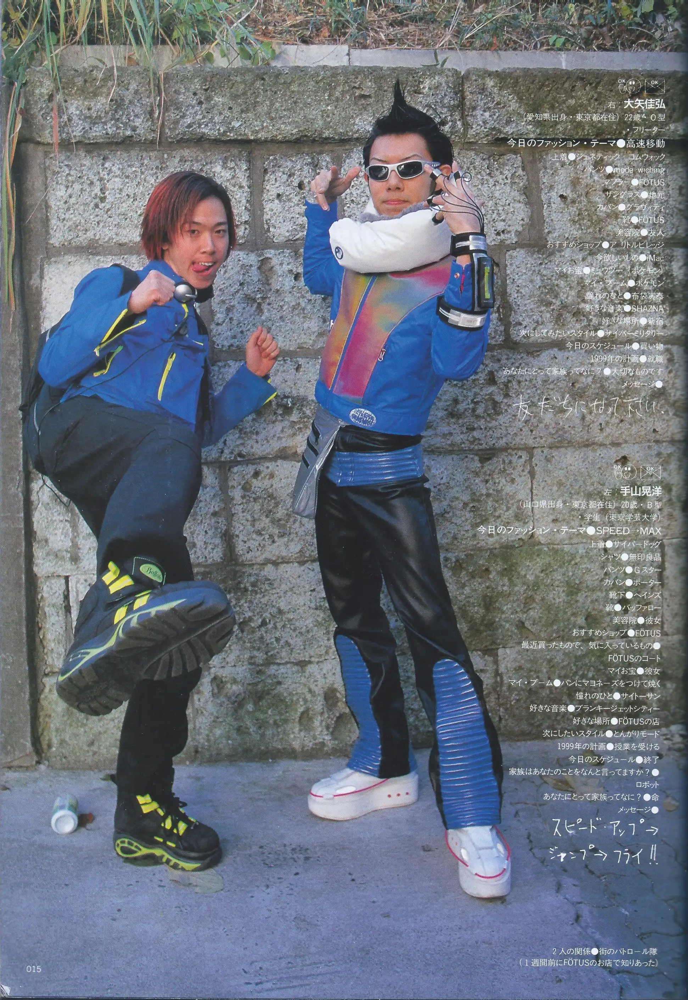
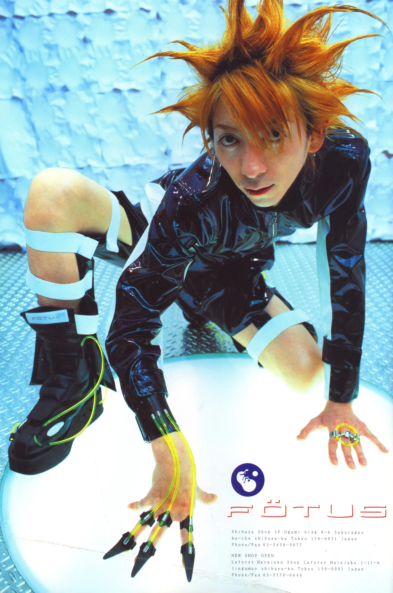

Cyberpop is a retro-futuristic style that first emerged in Japan during the 90s under the more generic name "cyber fashion". It is characterized by some fantasy, Y2K Futurism, a positive aura, and a stylized clean outline, as opposed to Cyberpunk and Cybergoth, which is rather negative and dark (post-apocalyptic). Cyberpop also contains more elements of Space Age in the usage of retro-future rings and shoulder puffs. The 1990s and early 2000's future fashion aesthetic found in Y2K Futurism is also influential. The color palette is similar to the one used in the Raver aesthetic, but differs in that natural materials are never used. Both Raver and Cyberpop fashion makes use of neon colored UFO pants, both wide legged and draw string. Hair is normally heavily bleached and brightly colored. Accessories are often made from neon laser cut acrylic into space-themed shapes or words, and chunky platform shoes are also common.

cyberpop
what's cyberpop?

characteristics
.jpeg)
.jpeg)
 







.jpeg)